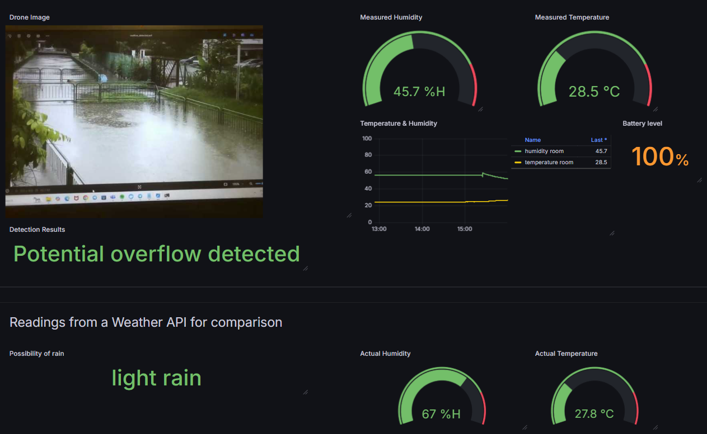
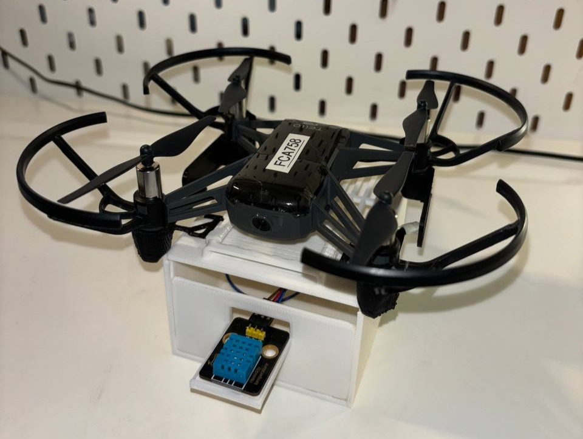
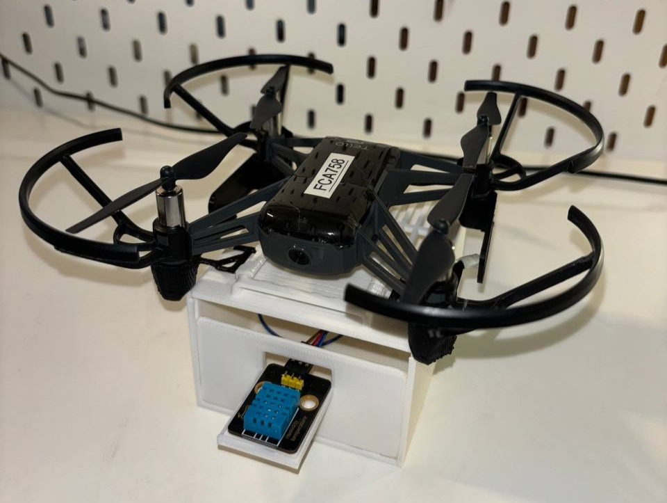

Intro
A section of my Major Project in Temasek Polytechnic.
About
Floods are become more and more common in Singapore, with some that have resulted in the destruction to environment or property This is a smart drone equipped with sensors and collects real-time:
- Temperature 🌡️
- Humidity 💦
- Visual aerial data 🖼️
The drone's mobility allows coverage of inaccessible areas, and the photos taken provides a broader view of the flooding! This makes the superior choice for rapid response and urban planning.
Technology Outline
For the drone, we used the Tello DJI Drone which is now discontinued. Our architecture stack includes Telegraf, InfluxDB, and Grafana (TIG). The ESP32(server) and RPi(client) are connected to the same AP.
How the analysis works:
The image from the drone is sent as a base64-encoded string to the RPI. Then it is
sent as a JSON payload to Google Vertex(LLM) AI which is first decoded then analysed.
The image is sent with a prompt that asks to look for signs such as high-water levels,
blocked drains, or flooding to determine if there is a potential overflow.
Lastly, the image (in base64 format) and the AI analysis results are both sent to InfluxDB directly
via an API request.
System Architecture Diagram

Dashboard Screenshot
How the dashboard works:
Additionally, Grafana is integrated with an alerting system such that
we can receive alert notifications in the Telegram app channel whenever there is overflow detected.
A visualisation of separate data conditions (temperature, humidiy and visual aerial) from
OpenWeatherMap
is also included.
Prototype and Housing
The software we used to design the housing was Tinker Cad.
 

Acknowledgements
Huge appreciation for Emir and Lorenzo for building this project with me. And for Mr Foo Tze Wan for his unwavering support and guidance. This was lots of fun to build and would not have been possible without everyone's hard work!

References
- influxdata ® Documentation. [Online] Available: https://docs.influxdata.com/telegraf
- DJITelloPy GitHub Repository. [Online] Available: https://github.com/damiafuentes/DJITelloPy